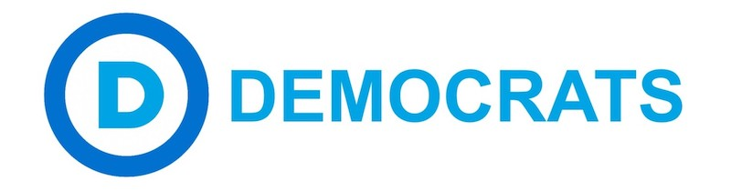

2017-04-09 18:00

The 2013 Massachusetts Democratic Party Platform is not limited to concerns of the Commonwealth. The Preamble alone mentions immigration, infastructure, national defense, diplomacy, and multiculturalism. The “Ethics and Transparency” section calls for the overturn of Citizen’s United, for example.
Delegates to the June 3rd state Convention in Worcester have an opportunity to send a message to the national DNC by voting on amendments to the following platform sections: Business and Entrepreneurship; Economic Growth; Education; Energy and Environment; Climate Crisis; Ethics and Transparency; Healthcare and Human Services; Housing; Immigration; Justice, Civil Rights and Civil Liberties; Labor; Public Safety and Crime Prevention; Revenue and Expenditures; Transportation and Infrastructure; Voting and Democracy; and Women.
The current platform needs updating as a matter of course. It also needs changes in light of what just happened to our country. Our Revolution Massachusetts, Progressive Massachusetts, and Progressive Democrats of America have collaborated on a number of amendments and additions to the platform (you can find another version here). Based on delegate and other input, the Massachusetts Democratic Platform Committee will then rewrite the state platform.
The 2013 platform isn’t bad as a statement of liberal values – and the 2017 Progressives’ changes aren’t so radical as to give Democrats much heartburn. The old platform mostly gets a day at the spa. But for a picky reader like me there are a number of things missing from both the current version and new proposals. Despite language on reducing “defense” spending (when we’ve had a quarter century of war), nowhere in the platform is there any mention of Foreign Policy. Plus, there are a number issues that Democrats have neglected that now demand clear statements of principle – especially since the Trump administration is attacking them so viciously.
Some of my suggestions below assume Democrats will eventually regain political advantage, but some of them assume we may not – and that it may now be up to state government to protect health, environment, civil liberties, and community policing.